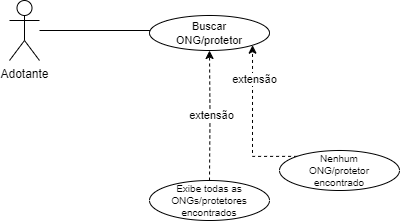

Elaboração do documento de especificação de casos de uso.
Ana Julia Alves, Letícia Caixeta, Manuela Oliveira, Paula Nascimento, Vitória Cristina
1. CASOS DE USO
1.1 Cadastrar pets
1.1.1 Descrição do Caso de Uso
Permite o cadastro de novos animais na plataforma, fornecendo detalhes como nome, idade, raça, porte, condições de saúde e fotos.
1.1.2 Atores
ONG e Protetor Autônomo
1.1.3 Pré-Condições
O usuário (administrador ou pessoa com permissão) deve estar autenticado no sistema.
1.1.4 Pós-Condições
O animal deve estar registrado na plataforma com todos os detalhes fornecidos (nome, idade, raça, porte, condições de saúde, fotos).
O sistema deve exibir uma mensagem de sucesso confirmando o cadastro.
1.1.5 Fluxo de Eventos
1.1.5.1 Fluxo Básico (Principal)
FB. Cadastrar pets
PASSOS:
Usuário faz o login no sistema
Acessar aba de cadastro exibida pelo sistema
Preencher as informações e fotos do pet (nome, idade, descrição) solicitadas pela tela de cadastro exibida pelo sistema
Finalizar o cadastro clicando no botão de finalizar cadastro
Exibir confirmação de cadastro
1.1.5.2 Fluxos Alternativos
FA1. Cadastrar pets - usuário não cadastrado
No passo 1, quando o ator quiser fazer login sem possuir um cadastro, o sistema deve realizar os seguintes passos:
1.1 Exibir mensagem que o usuário (ONG ou Protetor Autônomo) não está cadastrado no sistema.
1.2 Realizar o cadastro do usuário no sistema.
1.3 O Sistema retorna para o passo 2.
FA2. Cadastrar pets – credenciais incorretas
No passo 1, quando o ator solicitar login no sistema e não conseguir logar por erro de credenciais, o sistema deve:
1.1 Informar que usuário ou senha estão incorretos
1.2 Caso o usuário não consiga inserir as credenciais corretas, cadastrar nova senha.
1.2 Cadastrar ONG e/ou Protetor
1.2.1 Descrição do Caso de Uso
Tem como objetivo permitir que ONGs e/ou protetores independentes se cadastrem na plataforma, fornecendo informações como nome, endereço, detalhes de contato e informações sobre os animais disponíveis para adoção.
1.2.2 Atores
ONG e Protetor Autônomo
1.2.3 Pré-Condições
O usuário (administrador ou pessoa com permissão) deve estar autenticado no sistema.
1.2.4 Pós-Condições
A ONG ou o protetor deve estar registrado na plataforma com todos os detalhes fornecidos.
O sistema deve exibir uma mensagem de sucesso confirmando o cadastro.
1.2.5 Fluxo de Eventos
1.2.5.1 Fluxo Básico (Principal)
FB. Cadastrar ONG e/ou Protetor
PASSOS:
O usuário acessa a plataforma e clica em "Criar Conta"
O sistema exibe a aba de cadastro de ONG e/ou Protetor
Acessar a aba de cadastro de ONGs e protetores
Preencher as informações a ONG e/ou protetor
Finalizar o cadastro clicando no botão de finalizar cadastro
Sistema exibe uma mensagem confirmando o cadastro com sucesso.
1.2.5.2 Fluxos Alternativos
FA1. Cadastrar ONG e/ou Protetor – Cadastro de ONG e/ou Protetor já existente
No passo 2, quando o usuário tentar cadastrar uma ONG ou Protetor que já está registrado no sistema, o sistema deve realizar os seguintes passos:
2.1 O sistema exibe uma mensagem informando que o nome ou o CNPJ (no caso de ONGs) já está registrado.
2.2 O sistema oferece a opção de recuperar ou atualizar os dados da ONG/Protetor existente.
2.3 Caso o usuário escolha atualizar os dados, o sistema direciona para a tela de edição das informações cadastradas.
2.4 O sistema retorna ao passo 5 do fluxo principal.
FA2. Cadastrar ONG e/ou Protetor - Informações incompletas
No passo 2, se o usuário tentar finalizar o cadastro sem preencher todos os campos obrigatórios:
2.1 O sistema valida os dados e identifica campos obrigatórios não preenchidos.
2.2 O sistema exibe uma mensagem de erro informando que informações essenciais estão faltando.
2.3 O sistema destaca os campos que precisam ser preenchidos, permitindo ao usuário completar o cadastro.
2.4 O sistema retorna ao passo 4 do fluxo principal.
1.3 Cadastrar Adotante
1.3.1 Descrição do Caso de Uso
Tem como objetivo permitir que o adotante crie uma conta na plataforma, fornecendo suas informações pessoais e de contato.
1.3.2 Atores
Adotante
1.3.3 Pré-Condições
O usuário (administrador ou pessoa com permissão) deve estar autenticado no sistema.
1.3.4 Pós-Condições
O adotante deve estar registrado na plataforma com todos os detalhes fornecidos.
O sistema deve exibir uma mensagem de sucesso confirmando o cadastro.
1.3.5 Fluxo de Eventos
1.3.5.1 Fluxo Básico (Principal)
FB. Cadastrar adotante
PASSOS:
O usuário acessa a plataforma e clica em "Criar Conta".
O sistema exibe a aba de cadastro de adotantes.
O usuário preenche as informações pessoais, como nome completo, e-mail, telefone, endereço e CPF.
O usuário cria uma senha para o acesso e clica no botão de finalizar cadastro.
O sistema exibe uma mensagem confirmando o cadastro com sucesso.
1.3.5.2 Fluxos Alternativos
FA1. Cadastrar adotante – Adotante já cadastrado
No passo 3, se o adotante tentar se cadastrar com um e-mail ou CPF já existente no sistema, o sistema deve:
3.1 O sistema exibe uma mensagem informando que o e-mail ou CPF já está registrado.
3.2 O sistema oferece a opção de realizar o login ou recuperar a senha.
3.3 Se o adotante escolher recuperar a senha, o sistema envia um e-mail para redefinição.
3.4 O sistema retorna ao passo 2 do fluxo principal, se o adotante optar por tentar novamente.
FA2. Cadastrar adotante - Informações incompletas ou inválidas
No passo 4, se o adotante tentar finalizar o cadastro com informações incompletas ou inválidas, o sistema deve:
4.1 O sistema valida os campos e identifica informações obrigatórias que estão ausentes ou inválidas (ex: CPF incorreto ou e-mail em formato inválido).
4.2 O sistema exibe uma mensagem de erro destacando os campos que precisam ser corrigidos.
4.3 O adotante corrige as informações e tenta finalizar o cadastro novamente.
4.4 O sistema retorna ao passo 5 do fluxo principal, após a correção.
1.4 Buscar Animais Disponíveis
1.4.1 Descrição do Caso de Uso
Permite a busca de animais disponíveis para adoção na plataforma.
1.4.2 Atores
Adotante
1.4.3 Pré-Condições
O sistema deve conter animais cadastrados como disponíveis para adoção.
1.4.4 Pós-Condições
O sistema deve exibir uma lista de animais que correspondem aos critérios de busca fornecidos pelo usuário.
1.4.5 Fluxo de Eventos
1.4.5.1 Fluxo Básico (Principal)
FB. Buscar Animais Disponíveis
PASSOS:
Usuário faz o login no sistema.
Escolher a funcionalidade de busca de animais para adoção.
O sistema exibe um campo de pesquisa e filtros opcionais.
O usuário insere os critérios de busca ou utiliza os filtros disponíveis.
O usuário confirma a busca clicando no botão de pesquisa.
O sistema exibe uma lista de animais que atendem aos critérios de busca.
O usuário visualiza os detalhes dos animais listados (nome, idade, raça, fotos, etc.) e pode selecionar um para obter mais informações ou iniciar o processo de adoção.
No passo 4, quando o ator definir critérios de busca muito específicos ou incompatíveis, o sistema deve realizar os seguintes passos:
4.1 O sistema exibe uma mensagem informando que nenhum animal foi encontrado.
4.2 O sistema sugere a remoção de filtros ou ajustes nos critérios de pesquisa.
4.3 Usuário volta para o passo 3 com outros filtros.
1.5 Chat para troca de mensagens
1.5.1 Descrição do Caso de Uso
Tem como objetivo permitir a troca de mensagens entre adotantes, ONG e protetores, a fim de facilitar a comunicação.
1.5.2 Atores
Adotante, ONG e Protetor Autônomo
1.5.3 Pré-Condições
Os usuários (adotantes, ONGs e protetores) devem estar autenticados na plataforma.
1.5.4 Pós-Condições
A mensagem deve ser enviada e recebida com sucesso entre as partes envolvidas.
1.5.5 Fluxo de Eventos
1.5.5.1 Fluxo Básico (Principal)
FB. Chat para troca de mensagens
PASSOS:
Usuário faz o login no sistema.
O usuário navega até a funcionalidade de mensagens.
O usuário seleciona o contato com quem deseja trocar mensagens (adotante, ONG ou protetor).
O sistema exibe a lista de conversas existentes ou a opção de iniciar uma nova conversa.
O usuário inicia uma nova conversa ou seleciona uma conversa existente.
O usuário digita a mensagem e a envia.
A mensagem é entregue ao destinatário e exibida na janela de chat do destinatário.
O destinatário pode responder à mensagem, e o processo continua conforme o fluxo de troca de mensagens.
1.5.5.2 Fluxos Alternativos
FA1. Chat para troca de mensagens - Mensagem Não Enviada
No passo 6 o usuário tenta enviar uma mensagem, mas ocorre um erro (por exemplo, problemas de conexão ou erro no sistema). o sistema deve realizar os seguintes passos:
6.1 Exibir uma mensagem de erro indicando que a mensagem não foi enviada.
6.2 Oferecer ao usuário a opção de tentar enviar a mensagem novamente.
1.6 Login no Sistema
1.6.1 Descrição do Caso de Uso
Este caso de uso permite que adotantes, ONGs e protetores façam login na plataforma, fornecendo suas credenciais de acesso (e-mail e senha).
1.6.2 Atores
Adotante, ONG e/ou Protetor Autônomo
1.6.3 Pré-Condições
O usuário (adotante, ONG ou protetor) deve já estar registrado na plataforma.
O usuário deve fornecer credenciais válidas (e-mail e senha).
1.6.4 Pós-Condições
O usuário será autenticado com sucesso e terá acesso ao seu perfil e funcionalidades disponíveis na plataforma.
1.6.5 Fluxo de Eventos
1.6.5.1 Fluxo Básico (Principal)
FB. Login no Sistema
PASSOS:
Usuário acessa a página de login e insere suas credenciais (e-mail e senha)
Usuário clica no botão de login
Sistema valida as credenciais fornecidas
Sistema redireciona o usuário para a home do aplicativo
1.6.5.2 Fluxos Alternativos
FA1. Login – Credenciais Inválidas
No passo 3, quando o ator inserir credenciais incorretas e clicar no botão de login, o sistema deve realizar os seguintes passos:
Exibir uma mensagem de erro indicando que o e-mail ou a senha estão incorretos.
Permitir que o usuário tente inserir as credenciais novamente.
3.1 Sistema exibe uma mensagem informando que as credenciais estão incorretas
3.2 Usuário clica no botão “esqueci minha senha”
3.3 Sistema redireciona o usuário para a tela de recuperação
3.4 Usuário insere o endereço de e-mail cadastrado no aplicativo
3.5 Sistema envia um e-mail para o endereço informado com as instruções de redefinição de senha
3.6 Usuário cadastra uma nova senha
3.7 Sistema volta para o passo 1
FA2. Login - Usuário não cadastrado
No passo 3, quando o ator inserir um e-mail não cadastrado e clicar no botão de login, o sistema deve realizar os seguintes passos:
3.1 Sistema exibe uma mensagem informando que o usuário não possui uma conta
3.2 Usuário clica no botão de registro e efetua o cadastro
3.3 Sistema volta para o passo 1
1.7 Logout no Sistema
1.7.1 Descrição do Caso de Uso
Este caso de uso permite que adotantes, ONGs e protetores façam logout da plataforma, encerrando sua sessão ativa no sistema.
1.7.2 Atores
Adotante, ONG e/ou Protetor Autônomo
1.7.3 Pré-Condições
O usuário (adotante, ONG ou protetor) deve estar autenticado na plataforma com uma sessão ativa.
1.7.4 Pós-Condições
A sessão ativa do usuário é encerrada, e ele é desconectado do sistema.
O sistema deve redirecionar o usuário para a página inicial ou tela de login.
1.7.5 Fluxo de Eventos
1.7.5.1 Fluxo Básico (Principal)
FB. Logout no Sistema
PASSOS:
Usuário clica no ícone que mostra as opções.
Usuário clica no botão de logout.
Sistema desconecta o usuário da plataforma.
Sistema redireciona o usuário para a página de login.
1.8 Alteração das Informações dos Animais
1.8.1 Descrição do Caso de Uso
Este caso de uso permite que ONGs e/ou protetores alterem as informações dos animais cadastrados. A atualização dos dados é importante para manter as informações corretas e facilitar o processo de adoção.
1.8.2 Atores
ONG e Protetor Autônomo
1.8.3 Pré-Condições
A ONG ou protetor deve estar autenticado na plataforma.
1.8.4 Pós-Condições
As informações do animal são atualizadas com sucesso no sistema, refletindo as alterações feitas.
O sistema deve exibir uma confirmação da atualização bem-sucedida.
1.8.5 Fluxo de Eventos
1.8.5.1 Fluxo Básico (Principal)
FB. Alterar dados pet
PASSOS:
Usuário faz login no sistema.
Usuário acessa a página do pet em específico que ele deseja fazer alterações.
Seleciona o ícone para editar os dados.
Preenche corretamente as informações que deseja alterar.
Finaliza as alterações clicando no botão de salvar.
Exibir tela de confirmação da atualização dos dados.
1.8.5.2 Fluxos Alternativos
FA1. Alterações pets – pet não cadastrado
No passo 2, quando o ator quiser editar dados de um pet e perceber que ele ainda não foi cadastrado, o sistema deve realizar os seguintes passos:
2.1 Exibir mensagem que o pet não está cadastrado no sistema.
2.2 Realizar o cadastro do pet no sistema.
2.3 O Sistema retorna para o passo 2.
FA2. Alterações pets – credenciais incorretas
No passo 1, quando o ator solicitar login no sistema e não conseguir logar por erro de credenciais, o sistema deve:
1.1 Informar que usuário ou senha estão incorretos.
1.2 Caso o usuário não consiga inserir as credenciais corretas, cadastrar nova senha.
1.9 Consulta de ONG e/ou Protetor

1.9.1 Descrição do Caso de Uso
Este caso de uso permite que o adotante consulte as ONGs e protetores cadastrados na plataforma, obtendo informações como localização e tipos de animais disponíveis.
1.9.2 Atores
Adotante
1.9.3 Pré-Condições
O adotante deve estar autenticado na plataforma.
O sistema deve conter ONGs e protetores previamente cadastrados e com dados disponíveis para consulta.
1.9.4 Pós-Condições
O sistema deve exibir os detalhes relevantes para o adotante, como nome da ONG/protetor, endereço, contato e informações sobre os animais.
1.9.5 Fluxo de Eventos
1.9.5.1 Fluxo Básico (Principal)
FB. Consulta de ONG e/ou Protetor
PASSOS:
Usuário clica no filtro de busca.
O sistema exibe opções de filtros.
Usuário seleciona filtragem por ONGs/protetores.
Usuário digita o nome que deseja pesquisar.
O sistema lista quais as ONGs e/ou protetores identificados a partir da busca realizada.
O usuário seleciona a opção que deseja saber mais.
O sistema apresenta página com especificações da ONG e/ou protetor selecionado pelo usuário.
1.9.5.2 Fluxos Alternativos
FA1. Consulta de ONG e/ou Protetor - resultado não encontrado
No passo 4 quando o ator realizar a busca de ONG/protetor, porém existir nenhum resultado relacionado à busca, o sistema deve realizar os seguintes passos:
4.1 O sistema não exibe nenhum resultado.
4.2 O usuário realizar uma nova busca.
4.3 Retorna para o passo 5.
1.10 Lista de Favoritos
1.10.1 Descrição do Caso de Uso
Este caso de uso permite que o adotante crie uma lista de favoritos, onde pode salvar animais que tenham despertado seu interesse para uma possível adoção futura.
1.10.2 Atores
Adotante
1.10.3 Pré-Condições
O adotante deve estar autenticado na plataforma.
O sistema deve conter animais cadastrados.
1.10.4 Pós-Condições
O usuário recebe uma confirmação de que o item foi adicionado à lista de favoritos.
A lista de favoritos do usuário é atualizada, refletindo as mudanças.
1.10.5 Fluxo de Eventos
1.10.5.1 Fluxo Básico (Principal)
FB. Favoritar um pet
PASSOS:
Usuário realiza a busca de algum pet de acordo com especificação desejada ou apenas encontra algum no feed inicial.
Sistema retorna a listagem de animais.
O usuário clica na opção de "favoritar" o pet.
O pet selecionado é incluído na listagem de favoritos do usuário padrão.
1.10.5.2 Fluxos Alternativos
FA1. Favoritar pet em lista personalizada
Quando o ator quiser adicionar o pet em uma lista personalizada, o sistema deve realizar os seguintes passos:
3.1 O usuário clica em "favoritar" o pet.
3.2 Sistema apresenta pop-up com opção de criar uma lista de favoritos personalizada.
3.3 Usuário seleciona a opção de criar a lista personalizada nos favoritos para incluir o pet selecionado.
3.4 O pet selecionado é incluído na listagem de favoritos do usuário.